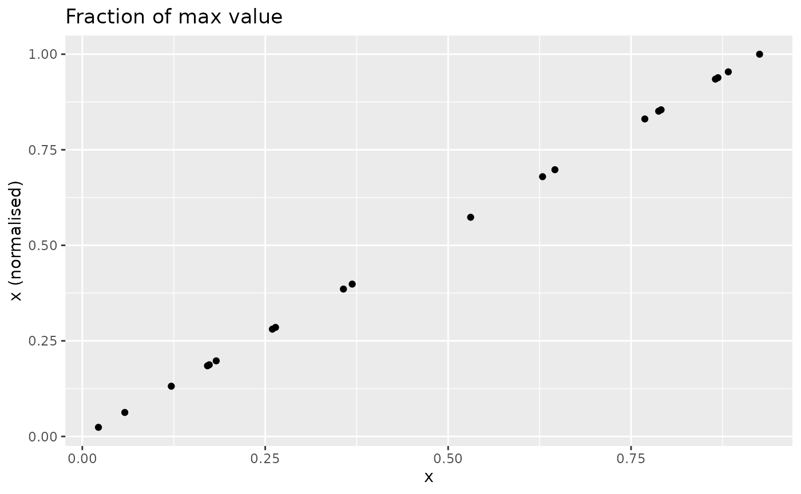

Normalisation is the operation of bringing indicators onto comparable scales so that they can be aggregated more fairly. To see why this is necessary, consider aggregating GDP values (billions or trillions of dollars) with percentage tertiary graduates (tens of percent). Average values here would make no sense because one is on a completely different scale to the other.
The normalisation function in COINr is imaginatively named
Normalise(). It has the following main features:
- A wide range of normalisation methods, including the possibility to pass custom functions
- Customisable parameters for normalisation
- Possibility to specify detailed individual treatment for each indicator
As of COINr v1.0, Normalise() is a generic function with
methods for different classes. This means that Normalise()
can be called on coins, but also on data frames, numeric vectors and
purses (time-indexed collections of coins).
Since Normalise() might be a bit over-complicated for
some applications, the qNormalise() function gives a
simpler interface which might be easier to use. See the Simplified normalisation
section.
Coins
The Normalise() method for coins follows the familiar
format: you have to specify:
-
xthe coin -
global_specsdefault specifications to apply to all indicators -
indiv_specsindividual specifications to overrideglobal_specsfor specific indicators, if required -
directionsa data frame specifying directions - this overrides the directions iniMetaif specified -
out2whether to output an updated coin or simply a data frame
Let’s begin with a simple example. We build the example coin and normalise the raw data.
library(COINr)
# build example coin
coin <- build_example_coin(up_to = "new_coin")
#> iData checked and OK.
#> iMeta checked and OK.
#> Written data set to .$Data$Raw
# normalise the raw data set
coin <- Normalise(coin, dset = "Raw")
#> Written data set to .$Data$NormalisedWe can compare one of the raw and un-normalised indicators side by side.
plot_scatter(coin, dsets = c("Raw", "Normalised"), iCodes = "Goods")
This plot also illustrates the linear nature of the min-max transformation.
The default normalisation uses the min-max approach, scaling
indicators onto the \([0, 100]\)
interval. But we can change the normalisation type and its parameters
using the global_specs argument.
coin <- Normalise(coin, dset = "Raw",
global_specs = list(f_n = "n_zscore",
f_n_para = list(c(10,2))))
#> Written data set to .$Data$Normalised
#> (overwritten existing data set)Again, let’s plot an example of the result:
plot_scatter(coin, dsets = c("Raw", "Normalised"), iCodes = "Goods")
Again, the z-score transformation is linear. It simply puts the resulting indicator on a different scale.
Notice the syntax of global_specs. If specified, it
takes entries f_n (the name of the function to apply to
each column) and f_n_para (any further arguments to
f_n, not including x). Importantly,
f_n_para must be specified as a list, even if it
only contains one parameter.
Note that COINr has a number of normalisation functions built
in, all of which are of the form n_*(), such as
n_minmax(), n_borda(), etc. Type
n_ in the R Studio console and press the Tab key to see a
list, or else browse the COINr functions alphabetically. These are also
listed explicitly in Built-in normalisation
functions.
-
n_borda(): Calculates Borda scores scaled on
-
n_dist2max(): -
n_dist2ref(): -
n_dist2targ(): -
n_fracmax(): -
n_goalposts(): -
n_minmax(): -
n_prank(): -
n_rank(): -
n_scaled(): -
n_zscore():
Calling external functions
Since f_n points to a function name, any function can be
passed to Normalise() as long as it is available in the
namespace. To illustrate, consider an example where we want to
categorise into discrete bins. We can use base R’s cut()
function for this purpose. We simply need to specify the number of bins.
We could directly call cut(), but for clarity we will
create a simple wrapper function around it, then pass that function to
Normalise().
# wrapper function
f_bin <- function(x, nbins){
cut(x, breaks = nbins, labels = FALSE)
}
# pass wrapper to normalise, specify 5 bins
coin <- Normalise(coin, dset = "Raw",
global_specs = list(f_n = "f_bin",
f_n_para = list(nbins = 5)))
#> Written data set to .$Data$Normalised
#> (overwritten existing data set)To illustrate the difference with the linear transformations above, we again plot the raw against normalised indicator:
plot_scatter(coin, dsets = c("Raw", "Normalised"), iCodes = "Goods")
Obviously this is not linear.
Generally, the requirements of a function to be passed to
Normalise() are that its first argument should be
x, a numeric vector, and it should return a numeric vector
of the same length as x. It should also be able to handle
NAs. Any further arguments can be passed via the
f_n_para entry.
Directions
By default, the directions are taken from the coin. These will have
been specified as the Direction column of
iMeta when constructing a coin with
new_coin(). However, you can specify different directions
using the directions argument of normalise():
in this case you need to specify a data frame with two columns:
iCode (with an entry for each indicator code found in the
target data set) and Direction giving the direction as -1
or 1.
To show an example, we take the existing directions from the coin, modify them slightly, and then run the normalisation function again:
# get directions from coin
directions <- coin$Meta$Ind[c("iCode", "Direction")]
head(directions, 10)
#> iCode Direction
#> 9 Goods 1
#> 10 Services 1
#> 11 FDI 1
#> 12 PRemit 1
#> 13 ForPort 1
#> 31 Renew 1
#> 32 PrimEner -1
#> 33 CO2 -1
#> 34 MatCon -1
#> 35 Forest -1We’ll change the direction of the “Goods” indicator and re-normalise:
# change Goods to -1
directions$Direction[directions$iCode == "Goods"] <- -1
# re-run (using min max default)
coin <- Normalise(coin, dset = "Raw", directions = directions)
#> Written data set to .$Data$Normalised
#> (overwritten existing data set)Goalposts, targets and iMeta specification
For some normalisation methods we may use the same basic
normalisation function for all indicators but use different parameters
for each indicator - for example, using distance to target normalisation
or goalpost normalisation. COINr now supports specifying these
parameters in the iMeta table. This is intended to give an
easier interface to these normalisation methods, as opposed to using the
full individual specifications list (see the next section on that).
The basic idea is that you specify the parameters as columns in the
iMeta data frame. COINr currently supports this for a
selected subset of inbuilt normalisation functions:
To use this approach, you have to (a) add the relevant columns to
iMeta before building the coin, and (b) set
f_n_para = "use_iMeta" within the global_specs
list when calling Normalise().
Let’s clarify this with an example. We will apply distance to target
normalisation using individual targets contained within
iMeta. In fact, the example data with COINr already has a
“Target” column which can be used for this purpose:
# show first few rows of iCode and Target cols in built-in iMeta
head(ASEM_iMeta[c("iCode", "Target")])
#> iCode Target
#> 1 LPI 4.118031
#> 2 Flights 200.332655
#> 3 Ship 20.113377
#> 4 Bord 115.900000
#> 5 Elec 104.670585
#> 6 Gas 90.060420The documentation
for the n_dist2targ() function explains that the required
iMeta columns for this function are Target,
and dist2targ_cap_max. This latter parameter (which
specifies whether to cap values that surpass the target) is included for
completeness, even though it is unlikely you would want to vary it from
one indicator to another. Since the Target column is already present, we
will just add the missing column:
# copy built in data
iMeta <- ASEM_iMeta
# set cap_max
iMeta$dist2targ_cap_max <- TRUENow we build the coin and normalise.
# build coin
coin <- new_coin(ASEM_iData, iMeta, quietly = TRUE)
# normalise, referencing iMeta columns
coin <- Normalise(coin, dset = "Raw", global_specs = list(f_n = "n_dist2targ", f_n_para = "use_iMeta"))
#> Written data set to .$Data$NormalisedNote that the global_specs$f_n_para is set to
"use_iMeta", telling the function to use the
iMeta columns. Let us visualise the result for a selected
indicator:
plot_scatter(coin, dsets = c("Raw", "Normalised"), iCodes = "LPI")This simply shows that (a) the indicator is now scaled between 0 and 1, and any raw values of LPI above the target of 4.1 are capped at a value of 1.
We now take another example using the “goalposts” approach, also known as “distance to frontier”. In this method, each indicator is scaled as a distance between an upper and lower bound. The following equation is for a positive direction indicator.
\[ x_n = \frac{x - G_{low}}{G_{high} - G_{low}} \]
where \(x_n\) is the normalised indicator value and \(G_{low}\) and \(G_{high}\) are respectively the lower and upper goalpost values. The negative direction formula is analogous.
To use this approach we again need to define the necessary columns in
iMeta. Referencing again the documentation of the relevant
function n_goalposts(), we need to add columns
goalpost_lower, goalpost_upper,
goalpost_scale and goalpost_trunc2posts, which
correspond to arguments to the n_goalposts() function.
For the sake of this example, we just define goalposts as 5% of the
range from the maximum and minimum of each indicator. We set the scaling
to 1 and truncation to TRUE.
# get iCodes and raw data
iCodes <- iMeta$iCode[iMeta$Type == "Indicator"]
# set general parameters
iMeta$goalpost_scale <- 1
iMeta$goalpost_trunc2posts <- TRUE
# set goalposts for each indicator
for(iCode in iCodes){
maxx <- max(ASEM_iData[[iCode]], na.rm = TRUE)
minx <- min(ASEM_iData[[iCode]], na.rm = TRUE)
rx <- maxx - minx
# fake goalposts in 5% of range
iMeta$goalpost_lower[iMeta$iCode == iCode] <- minx + 0.05*rx
iMeta$goalpost_upper[iMeta$iCode == iCode] <- maxx - 0.05*rx
}
# build coin
coin <- new_coin(ASEM_iData, iMeta, quietly = TRUE)
# normalise using minmax
coin <- Normalise(coin, dset = "Raw",
global_specs = list(f_n = "n_goalposts", f_n_para = "use_iMeta"))
#> Written data set to .$Data$NormalisedAgain, let’s plot an indicator before and after normalisation:
plot_scatter(coin, dsets = c("Raw", "Normalised"), iCodes = "Cov4G")Here we see that goalposts act like distance to target, but also cap at both ends.
For both the distance to target method and the goalposts method,
directionality is automatically accounted for. That is, if an
indicator has Direction -1 in iMeta, the distance to target
function will assume that values higher than the target are worse and
will give lower scores. , and values below the target will get a full
score. Similarly, the goalposts function will measure the progress from
the higher goalpost to the lower one for negative directionality
indicators. This means that in defining the goalposts in
iMeta, always assign the goalpost with the higher value to
“goalpost_upper” - COINr will account for the directionality.
Importantly, all of the functions mentioned in this section can also
be used without the special columns in iMeta, either by
specifying a single set of parameters to apply to all indicators using
global_specs, OR by providing detailed individual
specifications via the indiv_specs argument (see the next
section).
Individual normalisation
Finally let’s explore how to specify different normalisation methods
for different indicators. The indiv_specs argument takes a
named list for each indicator, and will override the specifications in
global_specs. If indiv_specs is specified, we
only need to include sub-lists for indicators that differ from
global_specs.
To illustrate, we can use a contrived example where we might want to
apply min-max to all indicators except two. For those, we apply a rank
transformation and distance to maximum approach. Note, that since the
default of global_specs is min-max, we don’t need to
specify that at all here.
# individual specifications:
# LPI - borda scores
# Flights - z-scores with mean 10 and sd 2
indiv_specs <- list(
LPI = list(f_n = "n_borda"),
Flights = list(f_n = "n_zscore",
f_n_para = list(m_sd = c(10, 2)))
)
# normalise
coin <- Normalise(coin, dset = "Raw", indiv_specs = indiv_specs)
#> Written data set to .$Data$Normalised
#> (overwritten existing data set)
# a quick look at the first three indicators
get_dset(coin, "Normalised")[1:4] |>
head(10)
#> uCode LPI Flights Ship
#> 1 AUS 36 9.889993 66.14497
#> 2 AUT 44 9.588735 0.00000
#> 3 BEL 45 9.711512 97.14314
#> 4 BGD 4 8.529810 45.80661
#> 5 BGR 7 8.741971 37.40495
#> 6 BRN 9 8.433044 35.38920
#> 7 CHE 42 10.563483 0.00000
#> 8 CHN 30 13.235114 100.00000
#> 9 CYP 14 8.721372 55.21211
#> 10 CZE 31 9.001961 0.00000This example is meant to be illustrative of the functionality of
Normalise(), rather than being a sensible normalisation
strategy, because the indicators are now on very different ranges.
In practice, if different normalisation strategies are selected, it is a good idea to keep the indicators on similar ranges, otherwise the effects will be very unequal in the aggregation step.
Data frames and vectors
Normalising a data frame is very similar to normalising a coin, except the input is a data frame and output is also a data frame.
mtcars_n <- Normalise(mtcars, global_specs = list(f_n = "n_dist2max"))
head(mtcars_n)
#> mpg cyl disp hp drat wt qsec vs am gear
#> 1 0.4510638 0.5 0.2217511 0.2049470 0.5253456 0.2830478 0.2333333 0 1 0.5
#> 2 0.4510638 0.5 0.2217511 0.2049470 0.5253456 0.3482485 0.3000000 0 1 0.5
#> 3 0.5276596 0.0 0.0920429 0.1448763 0.5023041 0.2063411 0.4892857 1 1 0.5
#> 4 0.4680851 0.5 0.4662010 0.2049470 0.1474654 0.4351828 0.5880952 1 0 0.0
#> 5 0.3531915 1.0 0.7206286 0.4346290 0.1797235 0.4927129 0.3000000 0 0 0.0
#> 6 0.3276596 0.5 0.3838863 0.1872792 0.0000000 0.4978266 0.6809524 1 0 0.0
#> carb
#> 1 0.4285714
#> 2 0.4285714
#> 3 0.0000000
#> 4 0.0000000
#> 5 0.1428571
#> 6 0.0000000As with coins, columns can be normalised with individual
specifications using the indiv_spec argument in exactly the
same way as with a coin. Note that non-numeric columns are always
ignored:
Normalise(iris) |>
head()
#> Sepal.Length Sepal.Width Petal.Length Petal.Width Species
#> 1 22.222222 62.50000 6.779661 4.166667 setosa
#> 2 16.666667 41.66667 6.779661 4.166667 setosa
#> 3 11.111111 50.00000 5.084746 4.166667 setosa
#> 4 8.333333 45.83333 8.474576 4.166667 setosa
#> 5 19.444444 66.66667 6.779661 4.166667 setosa
#> 6 30.555556 79.16667 11.864407 12.500000 setosaThere is also a method for numeric vectors, although usually it is just as easy to call the underlying normalisation function directly.
# example vector
x <- runif(10)
# normalise using distance to reference (5th data point)
x_norm <- Normalise(x, f_n = "n_dist2ref", f_n_para = list(iref = 5))
# view side by side
data.frame(x, x_norm)
#> x x_norm
#> 1 0.80463867 1.30010490
#> 2 0.93094431 1.51660156
#> 3 0.04739845 0.00214248
#> 4 0.24671772 0.34378957
#> 5 0.62955540 1.00000000
#> 6 0.64915098 1.03358817
#> 7 0.64776744 1.03121670
#> 8 0.81005278 1.30938506
#> 9 0.04614852 0.00000000
#> 10 0.72090970 1.15658762Purses
The purse method for normalise() is especially useful if
you are working with multiple coins and panel data. This is because to
make scores comparable from one time point to the next, it is usually a
good idea to normalise indicators together rather than separately. For
example, with the min-max method, indicators are typically normalised
using the minimum and maximum over all time points of data, as opposed
to having a separate max and min for each.
If indicators were normalised separately for each time point, then the highest scoring unit would get a score of 100 in time \(t\) (assuming min-max between 0 and 100), but the highest scoring unit in time \(t+1\) would also be assigned a score of 100. The underlying values of these two scores could be very different, but they would get
This means that the purse method for normalise() is a
bit different from most other purse methods, because it doesn’t
independently apply the function to each coin, but takes the coins all
together. This has the following implications:
- Any normalisation function can be applied globally to all coins in a purse, ensuring comparability. BUT:
- If normalisation is done globally, it is no longer possible to
automatically regenerate coins in the purse (i.e. using
regenerate()), because the coin is no longer self-contained: it needs to know the values of the other coins in the purse. Perhaps at some point I will add a dedicated method for regenerating entire purses, but we are not there yet.
Let’s anyway illustrate with an example. We build the example purse first.
purse <- build_example_purse(quietly = TRUE)Normalising a purse works in exactly the same way as normalising a
coin, except for the global argument. By default,
global = TRUE, which means that the normalisation will be
applied over all time points simultaneously, with the aim of making the
index comparable. Here, we will apply the default min-max approach to
all coins:
purse <- Normalise(purse, dset = "Raw", global = TRUE)
#> Written data set to .$Data$Normalised
#> (overwritten existing data set)
#> Written data set to .$Data$Normalised
#> (overwritten existing data set)
#> Written data set to .$Data$Normalised
#> (overwritten existing data set)
#> Written data set to .$Data$Normalised
#> (overwritten existing data set)
#> Written data set to .$Data$Normalised
#> (overwritten existing data set)Now let’s examine the data set of the first coin. We’ll see what the max and min of a few indicators is:
# get normalised data of first coin in purse
x1 <- get_dset(purse$coin[[1]], dset = "Normalised")
# get min and max of first four indicators (exclude uCode col)
sapply(x1[2:5], min, na.rm = TRUE)
#> LPI Flights Ship Bord
#> 0 0 0 0
sapply(x1[2:5], max, na.rm = TRUE)
#> LPI Flights Ship Bord
#> 83.98913 88.79325 85.91861 93.62416Here we see that the minimum values are zero, but the maximum values are not 100, because in other coins these indicators have higher values. To show that the global maximum is indeed 100, we can extract the whole normalised data set for all years and run the same check.
# get entire normalised data set for all coins in one df
x1_global <- get_dset(purse, dset = "Normalised")
# get min and max of first four indicators (exclude Time and uCode cols)
sapply(x1_global[3:6], min, na.rm = TRUE)
#> LPI Flights Ship Bord
#> 0 0 0 0
sapply(x1_global[3:6], max, na.rm = TRUE)
#> LPI Flights Ship Bord
#> 100 100 100 100And this confirms our expectations: that the global maximum and minimum are 0 and 100 respectively.
Any type of normalisation can be performed on a purse in this
“global” mode. However, keep in mind what is going on. Simply put, when
global = TRUE this is what happens:
- The data sets from each coin are joined together into one using the
get_dset()function. - Normalisation is applied to this global data set.
- The global data set is then split back into the coins.
So if you specify to normalise by e.g. rank, ranks will be calculated for all time points. Therefore, consider carefully if this fits the intended meaning.
Normalisation can also be performed independently on each coin, by
setting global = FALSE.
purse <- Normalise(purse, dset = "Raw", global = FALSE)
#> Written data set to .$Data$Normalised
#> (overwritten existing data set)
#> Written data set to .$Data$Normalised
#> (overwritten existing data set)
#> Written data set to .$Data$Normalised
#> (overwritten existing data set)
#> Written data set to .$Data$Normalised
#> (overwritten existing data set)
#> Written data set to .$Data$Normalised
#> (overwritten existing data set)
# get normalised data of first coin in purse
x1 <- get_dset(purse$coin[[1]], dset = "Normalised")
# get min and max of first four indicators (exclude uCode col)
sapply(x1[2:5], min, na.rm = TRUE)
#> LPI Flights Ship Bord
#> 0 0 0 0
sapply(x1[2:5], max, na.rm = TRUE)
#> LPI Flights Ship Bord
#> 100 100 100 100Now the normalised data set in each coin will have a min and max of 0 and 100 respectively, for each indicator.
Simplified normalisation
If the syntax of Normalise() looks a bit
over-complicated, you can use the simpler qNormalise()
function, which has less flexibility but makes the key function
arguments more visible (they are not wrapped in lists). This function
applies the same normalisation method to all indicators. It is also a
generic so can be used on data frames, coins and purses. Let’s
demonstrate on a data frame:
# some made up data
X <- data.frame(uCode = letters[1:10],
a = runif(10),
b = runif(10)*100)
X
#> uCode a b
#> 1 a 0.4502491 68.444140
#> 2 b 0.7473668 12.118920
#> 3 c 0.5332319 3.023275
#> 4 d 0.3933263 76.708353
#> 5 e 0.9335291 22.299263
#> 6 f 0.7497133 71.106902
#> 7 g 0.7243324 24.618804
#> 8 h 0.1938126 52.468511
#> 9 i 0.2445676 17.564955
#> 10 j 0.3134403 6.201058By default, normalisation results in min-max on the \([0, 100]\) interval:
qNormalise(X)
#> uCode a b
#> 1 a 34.666855 88.784414
#> 2 b 74.833295 12.343944
#> 3 c 45.885044 0.000000
#> 4 d 26.971643 100.000000
#> 5 e 100.000000 26.159962
#> 6 f 75.150504 92.398121
#> 7 g 71.719342 29.307873
#> 8 h 0.000000 67.103458
#> 9 i 6.861416 19.734905
#> 10 j 16.172101 4.312655We can pass another normalisation function if we like, and the syntax
is a bit easier than Normalise():
qNormalise(X, f_n = "n_dist2ref", f_n_para = list(iref = 1, cap_max = TRUE))
#> uCode a b
#> 1 a 1.0000000 1.00000000
#> 2 b 1.0000000 0.13903278
#> 3 c 1.0000000 0.00000000
#> 4 d 0.7780239 1.00000000
#> 5 e 1.0000000 0.29464588
#> 6 f 1.0000000 1.00000000
#> 7 g 1.0000000 0.33010155
#> 8 h 0.0000000 0.75580223
#> 9 i 0.1979244 0.22227893
#> 10 j 0.4665004 0.04857446The qNormalise() function works in a similar way for
coins and purses.
Built-in normalisation functions
COINr has a number of normalisation functions built in (that can be
used with Normalise() and friends), all of which are of the
form n_*(), such as n_minmax(),
n_borda(), etc. Type n_ in the R Studio
console and press the Tab key to see a list. Here these functions are
also explained in a little more detail. In the following, \(x\) is a vector of un-normalised indicator
values, and \(x'\) is the
corresponding normalised vector, using one of the methods below.
Linear methods
Min-max
The n_minmax() function implements the min-max method,
which is probably the most commonly-used normalisation approach in
composite indicator construction. The indicator is simply rescaled to
lie on an interval specified by upper and lower bounds \(u\) and \(l\):
\[ x' = \frac{x - x_{\text{min}} }{ x_{\text{max}} - x_{\text{min}} } \times (u - l) + l \]
This results in a linear transformation with minimum value \(l\) and maximum value \(u\):
# example data
set.seed(69)
x <- runif(20)
library(ggplot2)
# generic plot function to use in the other examples
nplot <- function(x, y, plot_title = NULL){
ggplot(data = NULL, aes(x = x, y = y)) +
geom_point() +
xlab("x") +
ylab("x (normalised)") +
ggtitle(plot_title)
}
# rescale onto [50, 100] interval
xdash <- n_minmax(x, l_u = c(50, 100))
nplot(x, xdash, "Min-max onto [50, 100]")The transformation is analogous for negative-direction indicators.
Z-score
The z-score function n_zscore() calculates z-scores
which rescales \(x\) to have a
specified mean \(\mu\) and standard
deviation \(\sigma\) (by default 0 and
1 respectively).
\[ x' = \frac{x - \text{mean}(x)}{\text{std}(x)} \times \sigma + \mu \]
where \(\text{mean}(x)}{\text{std}(x)\) and (x) are the sample mean and standard deviation of \(x\) respectively.
For example, specifying to have mean 10 and standard deviation 2:
Scaling
The n_scaled() function is a generic linear scaling
function with parameters \(u\) and
\(l\) of the form:
\[ x' = \frac{x-l}{u-l} \times 100 \]
Note this is not the min-max transformation and \(l\) and \(u\) do not generally represent the upper
and lower bounds. This is a linear transformation with shift
u and scaling factor u-l. The result looks as
follows:
Distance to maximum
Normalises as a measure of the distance to the maximum value, where the maximum value is the highest-scoring value. The formula used is:
\[ x' = 1 - \frac{x_{max} - x}{x_{max} - x_{min}} \]
This means that the closer a value is to the maximum, the higher its score will be. Scores will be in the range of 0 to 1.
nplot(x, n_dist2max(x), "Distance to maximum")Fraction of maximum
The n_fracmax() function simply measures each point as a
fraction of the maximum observed value in \(x\).
\[ x' = \frac{x}{x_{max}} \]
This looks as follows (not very exciting since \(x\) is already on a \([0,1]\) scale):
nplot(x, n_fracmax(x), "Fraction of max value")
Rank methods
Ranks
The most simple rank-based approach is to directly take the rank.
This can be done using base R functions, or using the wrapper
n_rank(), set for the purposes of normalisation so that
higher scores will give higher rank values, and sets ties to the minimum
value by default.
nplot(x, n_rank(x), "Rank")Borda
The n_borda() function calculates Borda scores
as:
\[ x' = \text{rank}(x) - 1 \]
where the rank is calculated by default as
rank(x, ties.method = "min", na.last = "keep"). Borda
ranking is a nonlinear transformation and may be useful for
highly-skewed indicators as an alternative to :
# normalise
xdash <- n_borda(x)
nplot(x, xdash, "Borda")Caution may be necessary with Borda scores when comparing indicators with different numbers of missing values. See the following discussion in Percentile ranks.
Percentile ranks
The percentile rank function n_prank() converts an
indicator to percentile
ranks, which are the percentage of scores in its frequency
distribution that are less than that score.
Percentile ranks act like ranks, but have the added nice property
that they don’t depend on the number of observations. For example: if we
convert an indicator with 100 observed values using Borda scores we will end up with scores in the range
\([0, 99]\). Another indicator in the
same data set with only 75 observed values (the rest are
NA) would on the other hand get scores in the range \([0,74]\)! On the other hand, percentile
ranks always scale onto the \([0, 1]\)
interval.
An indicator normalised by percentile ranks looks as follows:
nplot(x, n_prank(x), "Percentile ranks")Targets and references
Distance to a reference
The n_dist2ref() function gives a measure of the
distance to a specific value \(x_{\text{ref}}\) found in x.
The formula is:
\[ x' = 1 - \frac{x_{\text{ref}} - x}{x_{\text{ref}} - x_{min}} \]
In composite indicators, this is often used in the context of
benchmarking scores against the scores of a specific country. The
function therefore allows you to specify the index of the reference
value as opposed to the value itself. Values exceeding
x_refcan be optionally capped at 1 ifcap_max = TRUE`.
xdash <- n_dist2ref(x, iref = 3, cap_max = FALSE)
nplot(x, xdash, "Distance to reference (no cap)")With the cap, the result changes:
xdash <- n_dist2ref(x, iref = 3, cap_max = TRUE)
nplot(x, xdash, "Distance to reference (no cap)")Important note: at the time of writing, n_dist2ref()
does not allow for direction adjustment. This will hopefully be included
in a future update.
Distance to target
The n_dist2targ() function gives the distance of each
point in \(x\) to a specified numerical
target. This is different from the previous n_dist2ref() in
that the target is specified as a fixed value, rather than the index of
a point in \(x\). Additionally, this
function allows for adjustment by the direction of the indicator. For
positive-direction indicators:
\[ x' = \frac{x - x_{min}}{x_{targ} - x_{min}} \]
else for negative direction indicators:
\[ x' = \frac{x_{max} - x}{x_{max} - x_{targ}} \]
The function also features the possibility to cap values that exceed
the target, as n_dist2ref(). To see how this looks for a
positive indicator (with cap):
xdash <- n_dist2targ(x, targ = 0.75, direction = 1, cap_max = TRUE)
nplot(x, xdash, "Distance to 0.75 target (positive direction: with cap)")Similarly, with a negative direction and low target:
xdash <- n_dist2targ(x, targ = 0.2, direction = -1, cap_max = TRUE)
nplot(x, xdash, "Distance to 0.2 target (negative direction: with cap)")As explained in Goalposts, targets and
iMeta specification, when applying this function to a coin you can
specify the targets in the iMeta data frame.
Goalposts
The goalposts function n_goalposts() normalises as the
fraction of the distance of each value of \(x\) from the lower “goalpost” to the upper
one (these values are specified as function inputs). The direction of
the function can be specified to measure positive or negative progress.
Goalpost normalisation (sometimes known as “distance to frontier”) is
often used when there is a logical lower and upper bound to the
indicator.
For a positive indicator with goalposts \(GP_{low}\) and \(GP_{high}\):
\[ x' = \frac{x - GP_{low}}{GP_{high} - GP_{low}} \]
and for a negative directionality indicator:
\[ x' = \frac{x - GP_{high}}{GP_{low} - GP_{high}} \]
To see how this looks:
xdash <- n_goalposts(x, gposts = c(0.2, 0.75, 1), direction = 1)
nplot(x, xdash, "Goalposts with positive indicator")This is effectively a distance to target, but with upper and lower “targets”. The effect is analogous if the directionality is reversed:
xdash <- n_goalposts(x, gposts = c(0.2, 0.75, 1), direction = -1)
nplot(x, xdash, "Goalposts with negative indicator")This normalisation function is also supported such that goalposts can
be directly entered in iMeta. See Goalposts, targets and
iMeta specification.